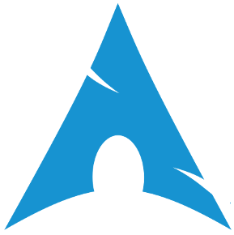

Sergal Mirror Info
Currently Mirroring:

Arch Linux
Link To Mirror
Onion Link to mirror
V3 Onion link to mirror
GNU
Link To Mirror
Onion Link to mirror
V3 Onion link to mirror
Apache
Link To Mirror
Onion link to mirror
V3 Onion link to mirror
Page Source
Back To home